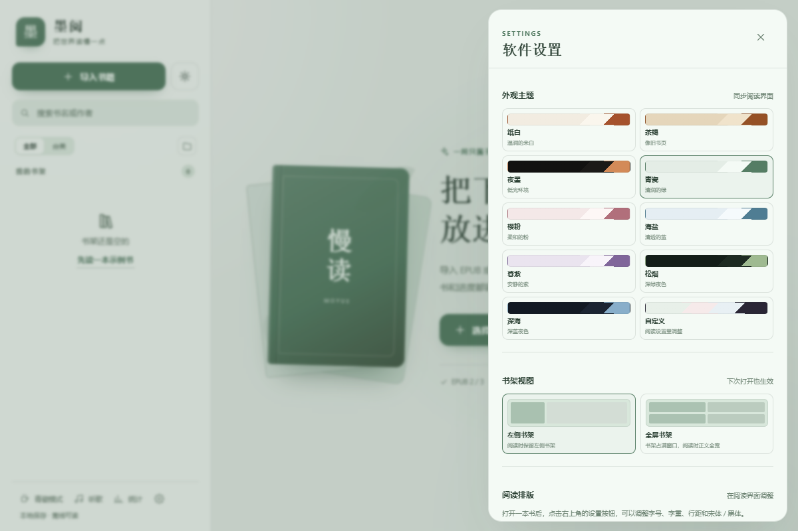
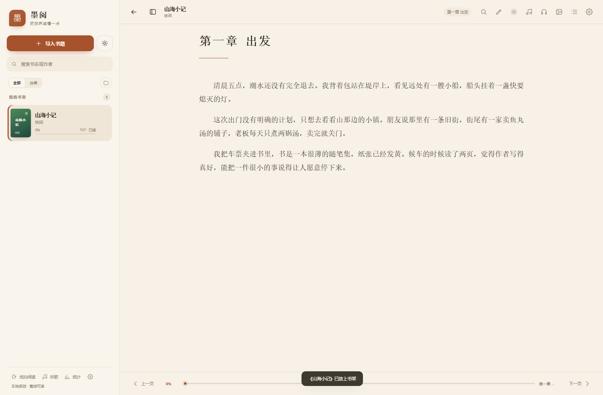
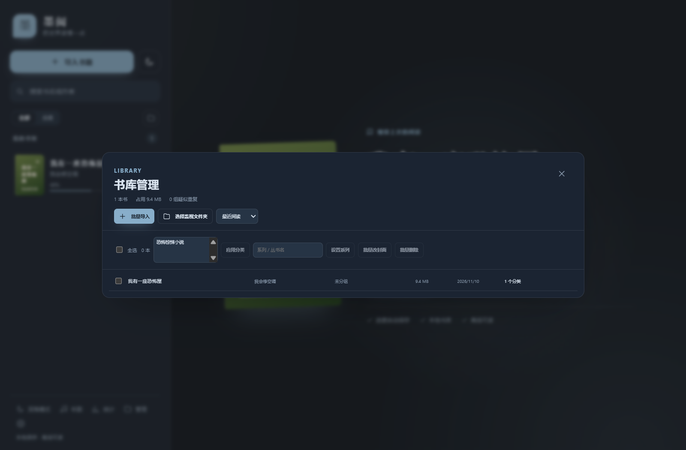

01
九套主题，慢慢挑
纸白、茶褐、夜墨，界面和阅读区一起换。字号、字重、行距、页边距和段间距都能调，导入字体也可以。

墨阅是一款本地优先的桌面阅读器。没有账号，没有广告，没有云同步。 书、进度、笔记和听书，都安静地留在你的电脑里。

不堆功能，只把阅读这件事做完整。
纸白、茶褐、夜墨，界面和阅读区一起换。字号、字重、行距、页边距和段间距都能调，导入字体也可以。

导入自己的字体，支持双栏、页边距和段间距。
四种颜色，随手写想法，点击笔记跳回原文。
系统语音开箱即用，也可以下载离线自然语音。
每天读了多久、多少页，连续阅读和半年热力图。
批量导入、文件夹监视、重复检测和系列分组。
PDF 搜索与双页；MOBI / AZW3 无 DRM 文件可导入。
实验性竖排，支持单栏翻页、主题和听书高亮。
封面、分类、系列、进度和笔记都在本机。全量备份可以带走书、书签、笔记、统计、字体和背景。

从纸张、字体到翻页动效，都可以慢慢调成自己喜欢的样子。
墨阅不要求登录，不把书上传到任何服务器。断网也能读，关掉软件，进度还在原来的那一页。
书页轻轻翻过去的时候，
世界也慢了一点。
Windows 10 / 11 x64，约 2.5MB。当前用户安装，不需要管理员权限。
安装包暂未购买 Windows 代码签名证书。点击「更多信息」→「仍要运行」即可。
支持 EPUB / TXT，也可以直接把书从资源管理器拖进窗口。
免费、开源，所有功能都不收费。喜欢的话可以在软件里请开发者喝杯咖啡，不影响任何功能。
不会。书库、进度、笔记和统计都在本机。墨阅不需要账号，也不做云同步。
目前主要支持 EPUB 2 / EPUB 3 和 TXT。PDF、MOBI、AZW3 暂不支持。
下载离线语音模型时需要联网，下载完成后可以完全离线朗读。也可以直接使用 Windows 系统语音。
安装包暂时没有购买 Windows 代码签名证书。点击「更多信息」→「仍要运行」即可。软件本身开源，可在 GitHub 查看代码。